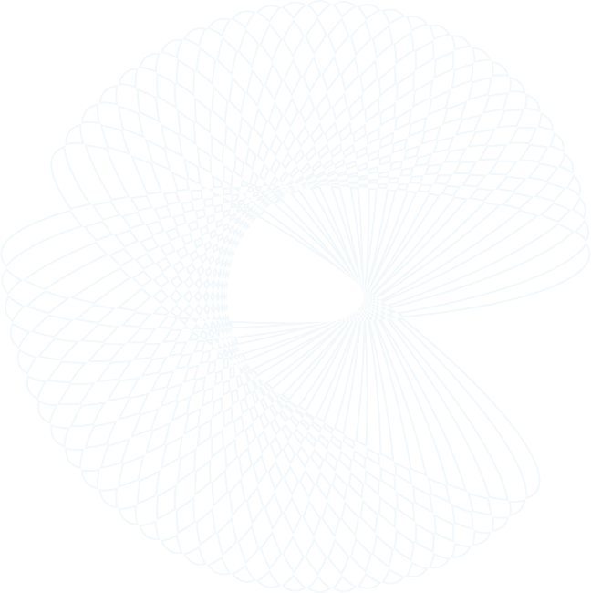

Improve Patient Outcomes with Fast, Accurate, and Safe Scoliosis Assessments
NSite is a peer-reviewed, clinically-proven technology that enables on-demand scoliosis assessment during an office appointment or screening event. This completely eliminates unreliable manual tests, screening X-rays, or unnecessary specialist referrals. Instead, we leverage 3D scanning combined with patented AI technology to allow you to harness the power of modern mobile technology for your patients.
KEY FEATURES
View Demo
Doctors and providers
Offer a fast, on-site assessment that eliminates all radiation and reduces the likelihood of missed follow a-upppointments and delayed diagnosis. Unlike 2-dimensional x-rays, the 3D NSite shows the rotational deformity that matters most for patient cosmesis.
Better For Patients

Complete a highly accurate scoliosis assessment within seconds. Instead of referring patients to another practice, or obtaining an X-ray, you can now offer a quick, convenient scoliosis assessment as a billable service.
Fast, Convenient Screening

The NSite technology was developed by Stanford physicians seeking a better way to monitor bone and joint health through research and innovation. The technology has been validated in multiple clinical trials with hundreds of patients
Evidence based

Fast, easy, and low-cost measurements make frequent measurements of ongoing treatments simple. Doctors, physical therapists, and chiropractors can use NSite to quantify treatment results.
Ongoing Assessments

NSite requires only a plug-in for your smartphone or tablet and a low-cost monthly subscription to the NSite AI scoliosis assessments service. Results are automated and available within seconds.
No Expensive Hardware


Let’s Straighten Out Scoliosis
Forget the X-rays and innaccurate or expensive equipment. NSite is the better, safer, and faster way to precisely screen and monitor scoliosis.

Founded out of



No X-Rays
Avoids all radiation exposure
FDA approval expected Summer 2022—we'll keep you posted.
Interested?
Join the waitlist
Inquiries
Have Questions
Frequently Asked Questions
What is NSite?
-
NSite is an AI-Enabled mobile app that provides fast, accurate and low-cost scoliosis assessment. Your smartphone or tablet simply captures a 3D scan from its camera using patented technology without requiring external hardware. The 3D scanning is then analyzed by our machine learning software and an objective assessment of Cobb angle is predicted.
Who developed NSite?
How does it work?
+
+
Does the system require special training?
+
I love it! Can I sign up today?
What do I need?
+
+
Menu
Home Providers Patients Scoliosis About us Contact us

 Copyright © 2021 Nsite All Rights Reserved.
Privacy Policy
Terms of Use
NSite is an AI-enabled mobile app that provides fast, accurate and low-cost scoliosis assessment. Your smartphone or tablet captures a 3D scan from its own camera and our automated software performs the deformity analysis of the spine on-demand.
Copyright © 2021 Nsite All Rights Reserved.
Privacy Policy
Terms of Use
NSite is an AI-enabled mobile app that provides fast, accurate and low-cost scoliosis assessment. Your smartphone or tablet captures a 3D scan from its own camera and our automated software performs the deformity analysis of the spine on-demand.
LET'S HEAR FROM THE EXPERTS!
TESTIMONIAL

.png)
Learn More
Even simpler than the classic scoliometer. NSite has the potential to change the way we properly and accurately screen for scoliosis
Dr. Anthony Catanzano MD
Pediatric Spine Surgeon
“
“